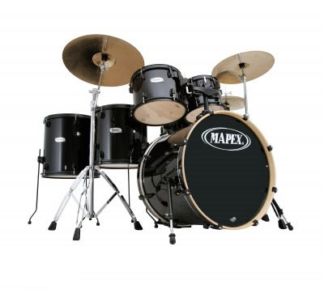

Mapex Voyager VR5254 5-Piece Drumkit with Hardware
Mapex Voyager 5 piece drum set, which is one of the most popular intermediate drumkits in the world. This drumkit delivers great sound and dynamic looks right out of the box! The Voyagers basswood shells are available in new covered finishes and featured newly designed lugs, tom mounts and a double tom holder that accommodates an auxiliary cymbal placement. The Voyager comes with compact and durable Mapex 330 Series hardware and a set up DVD that will get you started playing the day you bring it home. Start your voyage into drumming in the right direction with Mapex Voyager. Mapex Voyager 5 Piece Drum Set Features 7.2mm Basswood shell with covered finishes New double tom holder with auxiliary cymbal placement position New 330 series hardware Remo equipped bass drum heads and self muffling bass drum head
Mapex Voyager VR5254 Specifications:
o 7.2mm Basswood shell with covered finishes
o New double tom holder with auxiliary cymbal placement position
o New 330 series hardware
o REMO equipped bass drum heads and self muffling bass drum head
o Bass Drum: 22 x 16
o Tom Tom: 12 x 9
o Tom Tom: 13 x 10
o Floor Tom: 16 x 16
o Snare Drum: 14 x 5.5
o Tom Holder: TH656
o Cymbal Stand: C330
o Snare Stand: S330
o Hi-Hat Stand: H330
o Bass Drum Pedal: P330
o Colors Available: Dark Indigo, Wine Red, Crystal Sparkle, Black.